NMODL Kinetic Scheme
This notebook describes the reaction kinetics & mass action laws that apply within KINETIC blocks, and the implementation of the KineticBlockVisitor in NMODL which transforms KINETIC blocks into DERIVATIVE blocks containing an equivalent system of ODEs.
For a higher level overview of the approach to solving ODEs in NMODL, please see the nmodl-odes-overview notebook.
For a more general tutorial on using the NMODL python interface, please see the tutorial notebook.
Reaction Kinetics
We consider a set of reaction species 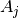, with corresponding Molar concentrations 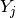
They react according to a set of reaction equations:
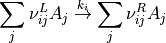
where - 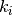 is the rate coefficient - 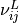, 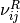 are stoichiometric coefficients - must be positive integers (including zero)
Law of Mass Action
This allows us to convert these reaction equations to a set of ODEs
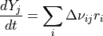
where 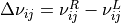, and
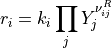
KINETIC block format
A reaction equation is specifed in the mod file as
~ A0 + 3A1 + 2A2 + ... <-> 2A0 + A1 + ... (kf, kb)
where - A0 etc are the species - the integer preceeding a species (with or without a space) is the corresponding stochiometric coefficient 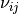 (implicitly 1 if not specified) - kf is the forwards reaction rate 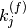 - kb is the backwards reaction rate 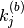, i.e. the reaction rate for the same reaction with the LHS and RHS exchanged *** We can convert these statements to a system of ODEs using the law of Mass Action:
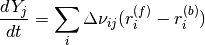
where , and
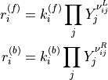
***
Other types of reaction statement
There is also have a reaction statement of the form
~ h << (a)
where the LHS must be a state variable, and the RHS is an expression inside parentheses.
The meaning of this statement is to add a to the differential equation for h, i.e.
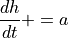
*** Finally there is a statement of the form
~ x + 2y + ... -> (a)
which is a one-way reaction statement with no reaction products.
This is just syntactic sugar for a special case of the standard <-> reaction equation, where the backwards rate is set to zero and there are no states on the RHS of the reaction, so the above is equivalent to
~ x + 2y + ... <-> (a, 0)
f_flux / b_flux variables
Within the KINETIC block in the MOD file, the user can make use of the f_flux and b_flux variables, which refer to the forwards 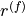 and backwards 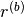 fluxes of the preceeding reaction statement.
The KineticBlockVisitor substitutes the current expression for these fluxes for these variables within the KINETIC block.
If these variables are referenced before a reaction statement then they are assumed to be zero.
[TODO] CONSERVE
Converse statement allows specification of a conservation law, e.g.
CONSERVE h + m + z = 1
In NEURON, the ODE for the last state variable on the rhs of this expression is replaced with this algebraic expression, so in this case instead of replacing with the forwards or backwards Euler equation, it would be replaced with 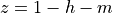
In order to be consistent with NEURON, in particular the way STEADYSTATE is implemented, we should do this in the same way. *** #### Implementation Tests
The unit tests may be helpful to understand what these functions are doing
KineticBlockVisitortests are located in test/visitor/visitor.cpp ***
Examples
[1]:
%%capture
! pip install nmodl
[2]:
import nmodl.dsl as nmodl
def run_kinetic_visitor_and_return_derivative(mod_string):
# parse NMDOL file (supplied as a string) into AST
driver = nmodl.NmodlDriver()
AST = driver.parse_string(mod_string)
# run SymtabVisitor to generate Symbol Table
nmodl.symtab.SymtabVisitor().visit_program(AST)
# constant folding, inlining & local variable renaming passes
nmodl.visitor.ConstantFolderVisitor().visit_program(AST)
nmodl.visitor.InlineVisitor().visit_program(AST)
nmodl.visitor.LocalVarRenameVisitor().visit_program(AST)
# run KINETIC block visitor
nmodl.visitor.KineticBlockVisitor().visit_program(AST)
# return new DERIVATIVE block
return nmodl.to_nmodl(
nmodl.visitor.AstLookupVisitor().lookup(
AST, nmodl.ast.AstNodeType.DERIVATIVE_BLOCK
)[0]
)
Ex. 1
Given the following KINETIC statement
~ h <-> m (a,b)
We have 2 state variables, and 1 reaction statement, so - 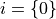 - 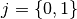
i.e. - the state vector 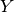 has 2 elements
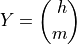
the stoichiometric coefficients are 1x2 matrices
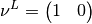
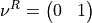
the rate vectors contain 1 element:
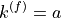
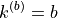
Using these we can construct the forwards and blackwards fluxes:
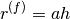
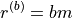
and finally we find the ODEs in matrix form:
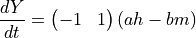
which in terms of the state variables can be written:
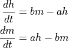
[3]:
ex1 = """
STATE {
h m
}
KINETIC kin {
~ h <-> m (a,b)
}
"""
print(run_kinetic_visitor_and_return_derivative(ex1))
DERIVATIVE kin {
h' = (-1*(a*h-b*m))
m' = (1*(a*h-b*m))
}
Ex. 2
Annihilation reaction statement
[4]:
ex2 = """
STATE {
x
}
KINETIC kin {
~ x -> (a)
}
"""
print(run_kinetic_visitor_and_return_derivative(ex2))
DERIVATIVE kin {
x' = (-1*(a*x))
}
Ex. 3
<< reaction statement
[5]:
ex3 = """
STATE {
x
}
KINETIC kin {
~ x << (a)
}
"""
print(run_kinetic_visitor_and_return_derivative(ex3))
DERIVATIVE kin {
x' = (a)
}
Ex. 4
Annihilation & << reaction statement for the same state variable
[6]:
ex4 = """
STATE {
x
}
KINETIC kin {
~ x << (a)
~ x -> (b)
}
"""
print(run_kinetic_visitor_and_return_derivative(ex4))
DERIVATIVE kin {
x' = (a)+(-1*(b*x))
}
Ex. 5
Reaction statements and use of f_flux, b_flux variables
[7]:
ex5 = """
STATE {
x y z
}
KINETIC kin {
~ x <-> y (a,b)
f = f_flux - b_flux
~ z -> (c)
g = f_flux
h = b_flux
}
"""
print(run_kinetic_visitor_and_return_derivative(ex5))
DERIVATIVE kin {
f = a*x-b*y
g = c*z
h = 0
x' = (-1*(a*x-b*y))
y' = (1*(a*x-b*y))
z' = (-1*(c*z))
}